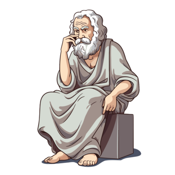

<div>
    <p class="tituloInstr cuerpoInstr">Instrucciones</p>
    <p class="cuerpoInstr">En este test de personalidad filosófica, te vamos a hacer 10 preguntas. Cada una posee distintas respuestas, seleccione las respuestas que más se ajusten a sus creencias, pensamientos, y filosofía. Al finalizar, sabrá con que filósofo se identifica más.</p>
    <p class="cuerpoInstr">¡A pensar!</p>
    <button onclick="empezarJuego()" onmouseenter="" class="botonHacerTest px-3 mt-2 mx-3 violetita">Hacer test</button>
    <button onclick="mostrarPortada()" onmouseenter="" class="botonHacerTest px-3 mt-2 mx-3 marroncito">Volver al inicio</button>
</div>